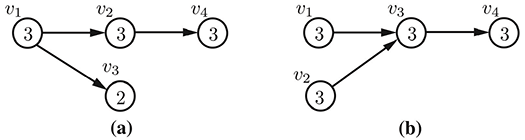

Metrics
A number of predefined metrics that have been defined for curricula and degree plans are described below. You may also define your own metrics for curricula and degree plans. Each of these data types has a metrics dictionary where you may write these user-defined metrics.
Curricular Metrics
CurricularAnalytics — Module.The curriculum-based metrics in this toolbox are based upon the graph structure of a curriculum. Specifically, assume curriculum $c$ consists of $n$ courses $\{c_1, \ldots, c_n\}$, and that there are $m$ requisite (prerequisite or co-requsitie) relationships between these courses. A curriculum graph $G_c = (V,E)$ is formed by creating a vertex set $V = \{v_1, \ldots, v_n\}$ (i.e., one vertex for each course) along with an edge set $E = \{e_1, \ldots, e_m\}$, where a directed edge from vertex $v_i$ to $v_j$ is in $E$ if course $c_i$ is a requisite for course $c_j$.
Blocking Factor
The blocking factor is an important curriculum-based metric because it measures the extent to which one course blocks the ability to take other courses in the curriculum. That is, a course with a high blocking factor acts as a gateway to many other courses in the curriculum. Students who are unable to pass the gateway course will be blocked from taking many other courses in the curriculum.
We define the blocking factor of a course $v_i$ as the number of courses in the graph that are reachable from $v_i$. As examples of the blocking factor metric, conisder the two four-course curricula, with courses $v_1, v_2, v_3$ and $v_4$, shown below. In part (a) of this figure, $v_1$ is a prerequisite for courses $v_2$ and $v_3$, and $v_2$ is a prerequisite for course $v_4$, while in part (b), courses $v_1$ and $v_2$ are prerequisites for course $v_3$, and $v_3$ is a prerequisite for course $v_4$. The blocking factor of each course are shown inside of the course vertices in this figure.

CurricularAnalytics.blocking_factor — Function.blocking_factor(c::Curriculum, course::Int)The blocking factor associated with course $c_i$ in curriculum $c$ with curriculum graph $G_c = (V,E)$ is defined as:
where $I(v_i,v_j)$ is the indicator function, which is $1$ if $v_i \leadsto v_j$, and $0$ otherwise. Here $v_i \leadsto v_j$ denotes that a directed path from vertex $v_i$ to $v_j$ exists in $G_c$, i.e., there is a requisite pathway from course $c_i$ to $c_j$ in curriculum $c$.
blocking_factor(c::Curriculum)The blocking factor associated with curriculum $c$ is defined as:
where $G_c = (V,E)$ is the curriculum graph associated with curriculum $c$.
Delay Factor
Many curricula, particularly those in science, technology engineering and math (STEM) fields, contain a set of courses that must be completed in sequential order. The ability to successfully navigate these long pathways without delay is critical for student success and on-time graduation. If any course on the pathway is not completed on time, the student will then be delayed in completing the entire pathway by one term. The delay factor metric allows us to quanity this effect.
We define the delay factor of course vertex $v_i$ to be the length of the longest path that contains $v_i$. As an example of the delay factor metric, consider the same four-course curricula shown above. The delay factor of each course are shown inside of the course vertices in the figure below.

CurricularAnalytics.delay_factor — Function.delay_factor(c::Curriculum, course::Int)The delay factor associated with course $c_k$ in curriculum $c$ with curriculum graph $G_c = (V,E)$ is the number of vertices in the longest path in $G_c$ that passes through $v_k$. If $\#(p)$ denotes the number of vertices in the directed path $p$ in $G_c$, then we can define the delay factor of course $c_k$ as:
where $v_i \overset{p}{\leadsto} v_j$ denotes a directed path $p$ in $G_c$ from vertex $v_i$ to $v_j$.
delay_factor(c::Curriculum)The delay factor associated with curriculum $c$ is defined as:
where $G_c = (V,E)$ is the curriculum graph associated with curriculum $c$.
Centrality
A course can be thought of as central to a curriculum if it requires a number of foundational courses as prerequisites, and the course itself serves as a prerequisite to many additional discipline-specific courses in the curriculum. The centrality metric is meant to capture this notion.
We define the centrality of source and sink vertices to be 0. For all other course vertices, consider all of the long paths (i.e., unique paths from a source to a sink) containing course vertex $v_i$. The centrality of $v_i$ is given by the sum of these path lengths. As an example of the centrality metric, consider the same four-course curricula shown above. The centrality factor of each course are shown inside of the vertices in the figure below.

In the case of the curriculum in part (a), there is one long path of length three that includes course $v_2$, hence its centrality is 3, while in part (b), there are two long paths of length three that include course $v_2$, hence its centrality is 6.
CurricularAnalytics.centrality — Function.centrality(c::Curriculum, course::Int)Consider a curriculum graph $G_c = (V,E)$, and a vertex $v_i \in V$. Furthermore, consider all paths between every pair of vertices $v_j, v_k \in V$ that satisfy the following conditions:
- $v_i, v_j, v_k$ are distinct, i.e., $v_i \neq v_j, v_i \neq v_k$ and $v_j \neq v_k$;
- there is a path from $v_j$ to $v_k$ that includes $v_i$, i.e., $v_j \leadsto v_i \leadsto v_k$;
- $v_j$ has in-degree zero, i.e., $v_j$ is a "source"; and
- $v_k$ has out-degree zero, i.e., $v_k$ is a "sink".
Let $P_{v_i} = \{p_1, p_2, \ldots\}$ denote the set of all directed paths that satisfy these conditions. Then the centrality of $v_i$ is defined as
where $\#(p)$ denotes the number of vertices in the directed path $p$ in $G_c$.
centrality(c::Curriculum)Computes the total centrality associated with all of the courses in curriculum $c$, with curriculum graph $G_c = (V,E)$.
Structural Complexity
The curricular complexity of a course is meant to capture the impact of curricular structure on student progression. Through experimentation, we have found that a simple linear combination of the delay and blocking factors provides a good measure for quantifying the structural complexity of a curriculum.
As an example of the structural complexity metric, consider the same four-course curricula shown above. The compleixty factor of each course, which is simply the sum of the course's delay and blocking factors, are shown inside of the course vertices in this figure.

CurricularAnalytics.complexity — Function.complexity(c::Curriculum, course::Int)The complexity associated with course $c_i$ in curriculum $c$ with curriculum graph $G_c = (V,E)$ is defined as:
i.e., as a linear combination of the course delay and blocking factors.
complexity(c::Curriculum, course::Int)The complexity associated with curriculum $c$ with curriculum graph $G_c = (V,E)$ is defined as:
For the example curricula considered above, the curriculum in part (a) has an overall complexity of 15, while the curriculum in part (b) has an overall complexity of 17. This indicates that the curriculum in part (b) will be slightly more difficult to complete than the one in part (a). In particular, notice that course $v_1$ in part (a) has the highest individual course complexity, but the combination of courses $v_1$ and $v_2$ in part (b), which both must be passed before a student can attempt course $v_3$ in that curriculum, has a higher combined complexity.
Degree Plan Metrics
CurricularAnalytics.basic_metrics — Function.basic_metrics(plan::DegreePlan)Computes basic metrics associated with degree plan plan. This metrics are primarily concerned with how credits hours are distributed across the terms in a plan.
The basic metrics computed include:
- number of terms : The total number of terms (semesters or quarters) in the degree plan, $n$.
- total credit hours : The total number of credit hours in the degree plan.
- max. credits in a term : The maximum number of credit hours in any one term in the degree plan.
- min. credits in a term : The minimum number of credit hours in any one term in the degree plan.
- max. credit term : The earliest term in the degree plan that has the maximum number of credit hours.
- min. credit term : The earliest term in the degree plan that has the minimum number of credit hours.
- avg. credits per term : The average number of credit hours per term in the degree plan, $\overline{ch}$.
- credit hour variance : The term-by-term credit hour variance, $\sigma^2$. If $ch_i$ denotes the number of credit hours in term $i$, then
To view the basic degree plan metrics associated with degree plan plan in the Julia console use:
julia> basic_metrics(plan)
julia> plan.metrics